Qwen 团队，Alibaba Token Hub，Alibaba Group
通过 MoE 扩展 LLM，可以在每个 token 的计算量几乎不变的情况下实现参数规模的大幅增长。然而，进一步扩大参数量需要越来越稀疏的路由，此时专家负载不均衡会更加严重。这种不均衡降低了参数利用率和训练效率，还可能损害训练稳定性，成为可靠扩展的瓶颈。在本文中，我们将两种具有代表性的无辅助损失方法统一解释为不完整的比例–积分–微分（PID）控制器：DeepSeek 的无损失方法相当于固定步长积分控制器，而 Kimi K3 的 Quantile Balancing 相当于广义比例控制器。基于这一控制视角，我们提出积分–微分控制器 ID Balancing。它根据负载误差缩放积分项，并且仅在不均衡恶化时激活微分项，从而对较大或正在恶化的误差施加更强的修正，在接近均衡时采用更小的更新。我们在 768 个专家上采用 Top-10、Top-5 和 Top-3 路由进行评估。在 Top-3 设置下，相比表现最好的基线，ID Balancing 将主干最坏情况下的 MaxVio 和训练平均 MinVio 分别降低了超过 50% 和 12%。当总参数量从 18.9B 增加到 69.9B（Top-10-of-768）时，ID Balancing 的主干最坏情况 MaxVio 几乎不变，并且比辅助损失基线低约 89.6%。ID Balancing 还保持了具有竞争力的语言建模和下游性能。随着稀疏程度增加，ID Balancing 的优势不断扩大，使其成为扩展更大、更稀疏 MoE 模型的一种有前景的解决方案。
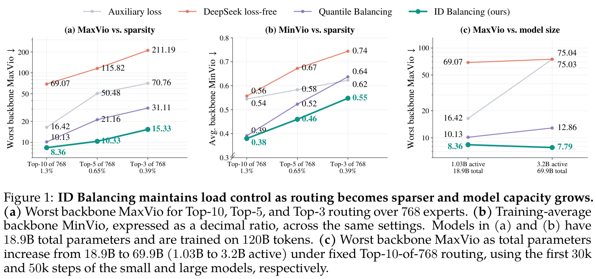
MoE 通过稀疏激活专家，为扩展 LLM 提供了一种高效方式（Jacobs et al., 1991; Roller et al., 2021）。对于每个 token，路由器只从 E 个专家组成的专家池中选择 K 个专家。当 K 固定时，增加专家数量可以提升总容量，而不会增加每个 token 所需的专家计算次数。这使得模型容量能够在每个 token 的固定计算预算下增长（接第 2 页）
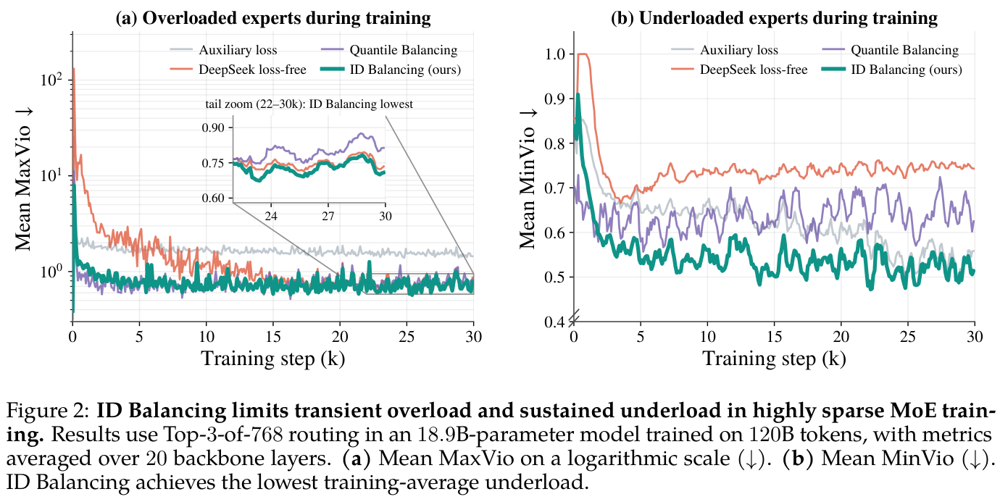
（接第 1 页）
随着专家池扩大，激活比例 K/E 降低，使极稀疏路由成为 MoE 扩展的一个自然方向（Dai et al., 2024; Puigcerver et al., 2024）。
随着路由变得更加稀疏，维持专家负载均衡也会更加困难。Top-K 选择边界附近的微小变化会改变 token 分配，使专家负载对路由器分数敏感（Lepikhin et al., 2021; Zhou et al., 2022）。负载过高的专家会拖慢 MoE 计算（He et al., 2022; 2021; Nie et al., 2022），而负载不足的专家得不到充分训练，使部分模型容量闲置。这种不均衡既限制了训练效率，也限制了增加专家数量所能带来的收益。图 1 展示了路由更加稀疏或模型容量增长时的这些挑战。因此，有效的负载控制是可靠训练更大、更稀疏 MoE 模型的一项关键要求。
现有无辅助损失方法（Wang et al., 2024b; Liu et al., 2024; Team et al., 2026）利用路由反馈调整专家偏置。我们通过统一的比例–积分–微分（PID）框架（Johnson & Moradi, 2005）解释这些更新：专家偏置构成控制状态，偏离均匀负载的程度提供反馈信号。DeepSeek 的无损失方法相当于固定步长积分控制器，对小负载误差和大负载误差施加相同的修正。Kimi K3 的 Quantile Balancing 相当于广义比例控制器，根据当前 batch 计算出的目标设置偏置，而不显式累积过去的负载误差。图 2 展示了 Top-3-of-768 路由下观察到的瞬时过载和持续负载不足。这一控制视角将这些方法的更新方式与其局限性联系起来，并启发了一种更具适应性的响应：修正应随负载误差缩放，并在不均衡恶化时作出响应。
基于这一控制视角，我们提出 ID Balancing，这是一种用于稳定训练高度稀疏 MoE 模型的积分–微分控制器。其积分项对更大的负载误差施加更大的修正，在接近均衡时施加更小的修正。其微分项利用负载误差的变化，仅在不均衡恶化时加入额外修正。ID Balancing 将这些修正累积到专家偏置中，并省去比例项。每次更新后重新进行中心化，移除所有偏置的公共分量，而不改变路由决策。该方法每层仅需要 O(E) 的 token 计数反馈，不会向语言建模目标加入均衡 gradient。
我们在 768 个专家上使用 Top-10、Top-5 和 Top-3 路由评估 ID Balancing，模型总参数量最高达 69.9B。我们还在标准峰值学习率 2.3 倍的恒定学习率下测试负载控制。在 Top-3 设置下，相比表现最好的基线，ID Balancing 将主干最坏情况 MaxVio（Wang et al., 2024b）和训练平均 MinVio 分别降低了超过 50% 和 12%。在固定的 Top-10-of-768 路由下，当总参数量从 18.9B 增加到 69.9B 时，其主干最坏情况 MaxVio 几乎不变。在改善负载控制的同时，该方法也保持了具有竞争力的语言建模和下游性能。我们的贡献如下：
（第 2 页末尾条目的跨页句已在上一页接全。）
第 2.1 节介绍 PID 的三个分支。随后，我们在第 2.2 节将 MoE 负载均衡表述为控制问题，并在第 2.3 节考察这两种方法。
比例–积分–微分（PID）控制器（Podlubny, 1994; Ang et al., 2005; Visioli, 2006; Shah & Agashe, 2016; Aströ\(m\) & \(H\)ägglund, 2005）利用反馈驱动系统趋向目标。在步骤 \(t\)，它以目标值减去测量输出得到误差 \(e_{t}\)，并产生控制信号 \(u_{t}\)。比例分支响应当前误差，积分分支累积过去的误差，微分分支响应误差的变化（Isaksson & Graebe, 2002）。一种标准的离散时间形式为：
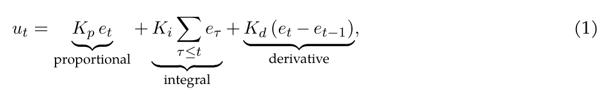
其中，\(K_{p}\)、\(K_{i}\)、\(K_{d} \ge 0\) 是三个分支的增益，\(\tau\) 表示截至 \(t\) 的各步骤。式（1）关于误差是线性的。对于 MoE 均衡，我们采用广义 PID 视角，保留三个分支在时间上的作用，同时允许对反馈进行非线性变换。这一视角为比较专家偏置更新如何随时间利用反馈提供了共同基础。
考虑一个包含 \(E\) 个路由专家和一个 Top-K 路由器的 MoE 层。对于 token 表示 \(x \in \mathbb{R} ^{d}\)，路由器计算 logits \(z = W_{r}x\)，其中 \(d\) 是隐藏维度，\(W_{r} \in \mathbb{R} ^{E\times d}\) 是路由器权重矩阵。激活函数 \(\sigma\) 将每个 logit 映射为专家分数 \(s_{i} = \sigma (z_{i})\)。无损失方法为每个专家维护一个不可训练的偏置 \(b_{i}\)，并按以下方式选择专家：
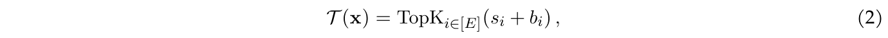
其中 \([E] = \{1, \ldots , E\}\)，\(\mathcal{T}(x)\) 包含加偏置后的分数最大的 \(K\) 个专家的索引。路由器通过归一化所选专家不含偏置的原始分数 \(s_{i}\) 得到组合权重。
在训练步骤 \(t\)，令 \(n_{i}^{(t)}\) 为分配给专家 \(i\) 的 token 数量。均匀目标负载和归一化负载误差为：
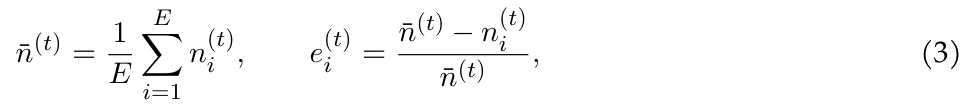
其中，对于任意非空 batch，\(\bar{n}^{(t)} > 0\)。负误差表示过载，正误差表示负载不足。MaxVio 和 MinVio 衡量这两个方向上的最大偏离，定义见式（13）。这些量定义了一个以均匀负载为目标的反馈环路。偏置向量 \(b^{(t)}\) 既作为持久的控制器状态，也作为路由输入，而 token 计数向量 \(n^{(t)}\) 是测量输出。每一步之后，控制器使用误差向量 \(e^{(t)}\) 更新偏置，从而改变下一步的路由决策和专家负载。
我们按专家偏置更新如何随时间利用路由反馈来比较这些更新。令 \(P^{(t)}\)、\(I^{(t)}\)、\(D^{(t)} \in \mathbb{R} ^{E}\) 分别表示比例、积分和微分贡献。在 PID 形式下，下一步偏置为：
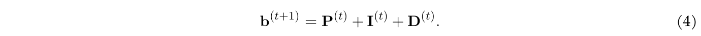
比例分支使用当前测量值，或由当前 batch 计算的目标。积分分支累积过去的负载误差，而微分分支使用误差变化 \(e^{(t)} - e^{(t-1)}\)。这些时间上的作用定义了各个分支，允许对反馈进行非线性变换，而不要求满足式（1）中的线性依赖关系。
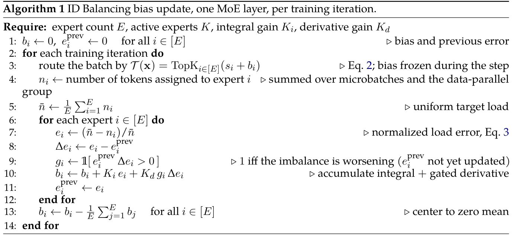
输入：专家数量 \(E\)、激活专家数量 \(K\)、积分增益 \(K_{i}\)、微分增益 \(K_{d}\)。
在 MoE 路由中，偏置 \(b^{(t)}\) 既是持久的控制器状态，也是下一次 Top-K 决策的控制输入。式（4）采用位置形式，直接给出下一步偏置。同一更新也可以写成增量形式，将 \(\Delta b^{(t)} = b^{(t+1)} - b^{(t)}\) 加到当前偏置上。我们使用这个广义 PID 模型解释一种方法如何利用反馈，并非声称每一种方法都遵循式（1）中的线性规则。在这一视角下，DeepSeek 的无损失方法对应积分控制，而 Quantile Balancing 可以解释为广义比例控制器。
将 DeepSeek 的无损失方法视为固定步长积分控制。DeepSeek 的无损失方法（Wang et al., 2024b; Liu et al., 2024）根据负载误差的符号更新每个专家的偏置。从 \(b^{(0)} = 0\) 开始，更新为：
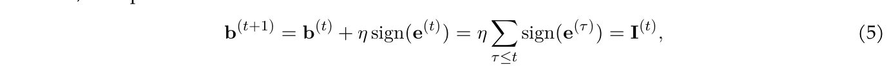
其中 \(\eta > 0\) 是步长，sign(·) 逐元素作用。该更新提高负载不足专家的偏置，降低过载专家的偏置。式（5）中的累积求和表明，偏置存储了过去的误差符号。在我们的广义 PID 视角下，这对应固定步长积分控制，且 \(P^{(t)} = D^{(t)} = 0\)。然而，取符号操作舍弃了误差幅度：无论不均衡有多严重，每个非零误差都得到大小为 \(\eta\) 的修正。
将 Quantile Balancing 视为广义比例控制。Quantile Balancing（Team et al., 2026）根据当前 batch 的分数分布计算目标偏置。令 \(S^{(t)} \in \mathbb{R} ^{m\times E}\) 包含 \(m\) 个 token 的分数，其中 \(S_{i,j}^{(t)}\) 是 token \(i\) 对专家 \(j\) 的分数。该方法直接将下一步偏置设为这个目标：
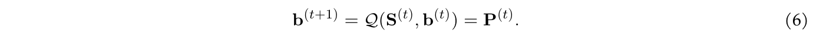
相应的增量 \(Q(S^{(t)}, b^{(t)}) - b^{(t)}\) 修正了相对于当前目标的偏离。
按照 Kimi K3 的做法，该目标为每个专家分配约 \(q =\) mK/E 个 token。对于 token \(i\)，令 \(\alpha _{i}^{(t)}\) 为 \(r \in [E]\) 上加偏置分数 \(S_{i,r}^{(t)} + b_{r}^{(t)}\) 中第 \(K+1\) 大的值。专家 \(j\) 的目标偏置为：
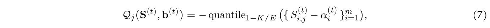
其中，\(S_{i,j}^{(t)} - \alpha _{i}^{(t)}\) 是相对于当前截断阈值的分数裕量。在保持这些阈值固定时，该目标使约 K/E 比例的加偏置裕量大于零，从而匹配所需负载 \(q\)。并列值和整数舍入会影响精确计数。1 目标随 batch 的分数分布而变化，并通过 \(\alpha _{i}^{(t)}\) 依赖当前偏置。因此，该更新仍然依赖状态，但不显式累积过去的负载误差。在我们的广义 PID 视角下，这种对依赖 batch 的目标的直接响应构成非线性比例分支，且 \(I^{(t)} = D^{(t)} = 0\)。
1 在大规模场景下，我们根据每个专家的裕量直方图估计分位数（Team et al., 2026）。
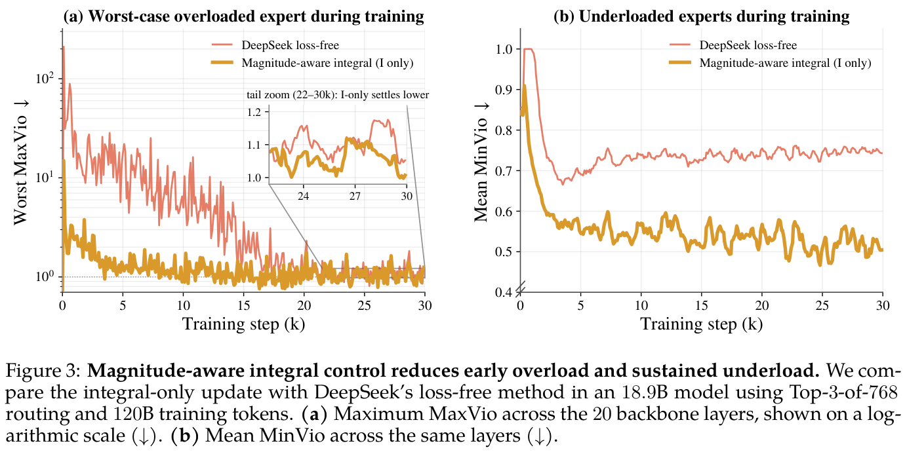
将辅助损失视为基于 gradient 的均衡。辅助损失方法（Shazeer et al., 2017; Lepikhin et al., 2021; Xue et al., 2024）通过向训练目标加入可微项来促使专家负载均衡。对于包含 T 个 token 的一个 batch，一种常见形式为：
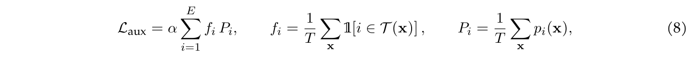
其中，求和覆盖 batch 内的所有 token，\(\mathbb{1}[\cdot ]\) 是指示函数。这里，\(f_{i}\) 是分配给专家 \(i\) 的 token 比例，\(P_{i}\) 是其平均路由器概率，其中 \(p_{i}(x) = softmax_{i}(W_{r}x)\)。系数 \(\alpha\) 控制损失强度，并吸收恒定的缩放因子。均衡损失通过与语言建模目标相同的优化过程更新路由器权重 \(W_{r}\)。它通过作用于这些权重的 gradient 影响 token 分配，而不维护单独的控制偏置。因此，辅助损失均衡不属于式（4）中的专家偏置控制方法族。
对负载控制的启示。DeepSeek 的无损失方法不考虑误差幅度而使用固定步长，因此在响应速度和精度之间存在权衡。它对大误差的响应有限，这与图 2 中早期平均 MaxVio 达到 132 的尖峰一致。在接近均衡时，同样的步长存在越过目标的风险。相比之下，Quantile Balancing 跟随由每个 batch 的分数分布推导的目标。目标变化有助于解释图 5 中它在训练后期较大的偏置漂移。这些观察启发我们：修正应随负载误差缩放，并在不均衡恶化时作出更强的响应。
基于第 2.3 节的控制视角，ID Balancing 同时响应负载误差的幅度和变化过程。它只改变专家偏置更新，保留式（2）的路由规则和式（3）的归一化误差。控制器将感知误差幅度的积分项与仅在不均衡恶化时激活的微分项结合起来。它省去比例项，并在每次更新后对偏置重新中心化，以移除公共分量。算法 1 给出了完整更新过程。
感知误差幅度的积分项。DeepSeek 的无损失方法只使用负载误差的符号，给予每个非零误差相同大小的修正。为了使响应适应不均衡的严重程度，我们按归一化误差本身缩放更新：
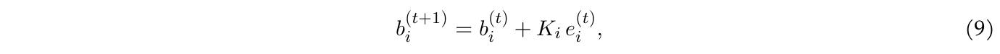
其中 \(K_{i} \ge 0\) 是所有专家共享的积分增益。修正随 \(|e_{i}^{(t)}|\) 增大，并在专家接近目标负载时缩小。由于偏置累积这些修正，该更新保留了积分控制的记忆性。当初始化为 \(b^{(0)} = 0\) 时，积分更新还保持偏置零均值，因为根据式（3），\(\sum _{i}e_{i}^{(t)} = 0\)。固定符号更新不具备这一性质：\(\sum _{i}\operatorname{sign}(e_{i}^{(t)})\)（接第 6 页）
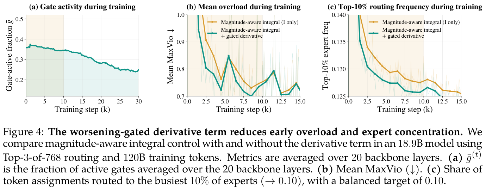
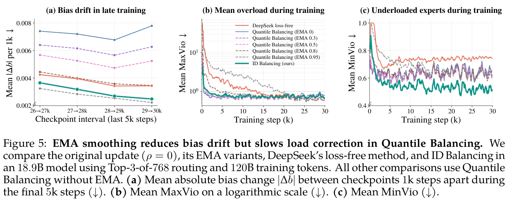
（接第 5 页）
通常不为零，使偏置的公共分量可能发生漂移。图 3 比较了这两种积分更新。按误差幅度缩放降低了最坏层的 MaxVio 峰值和持续负载不足，体现出更强的早期修正能力和更好的专家利用率。
仅在恶化时开启的门控微分项。积分项响应误差幅度，但无法区分同样大小的误差是在增大还是缩小。为捕捉这一区别，我们计算误差变化：
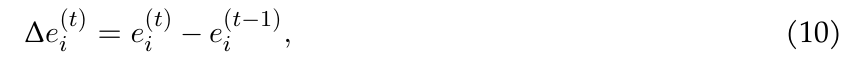
其中 \(e_{i}^{(-1)} = 0\)。我们只保留使已有不均衡进一步远离零的变化：
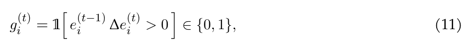
其中 \(\mathbb{1}[\cdot ]\) 是指示函数。当上一轮误差与其变化同号时，门控开启，因此不均衡增大而不穿过零点。当误差保持不变、趋向零或穿过零点时，门控保持关闭。第一步时门控也关闭。修正 \(K_{d}g_{i}^{(t)}\Delta e_{i}^{(t)}\) 与积分更新一起累积到偏置中。它以误差差分为输入，但与经典微分输出不同，它既受门控控制，又被累积。图 4 表明，激活门控的比例从训练早期约 0.38 降到后期的 0.25。加入门控修正会降低早期负载违规，而随着训练推进，其轨迹逐渐接近仅使用积分更新的轨迹。
ID Balancing 为什么省去比例项。ID Balancing 将 \(K_{p}\) 设为 0，通过累积偏置修正控制专家负载。在第 2.3 节的广义 PID 视角下，Quantile Balancing 跟随从当前 batch 计算出的目标。分数分布改变时，目标也随之改变，在我们的实验中导致训练后期更大的偏置变化。专家相对偏置的变化较小，可以限制对 Top-K 选择边界的扰动，帮助稳定路由。对于权重合并，例如对附近 checkpoint 求平均，更平滑的偏置轨迹也是有益的，因为合并后的权重必须与路由状态保持兼容。更低的偏置漂移可能减少这种不匹配（接第 7 页）
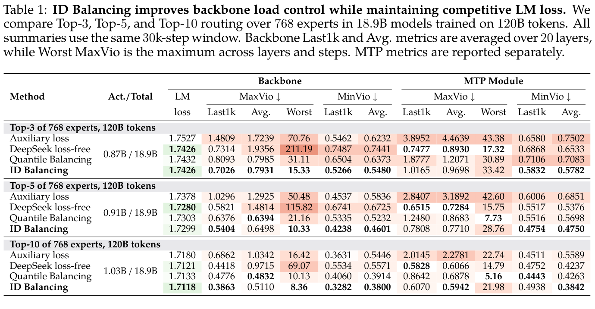
（接第 6 页）
风险，因为它使源 checkpoint 的路由状态更加接近。为考察偏置平滑和负载控制之间的权衡，我们仅作为诊断手段，为 Quantile Balancing 加入指数移动平均（EMA）平滑（Winters, 1960; Hunter, 1986）：\(b^{(t+1)} = \rho b^{(t)} + (1 - \rho )Q(S^{(t)}, b^{(t)})\)。这里，\(0 \le \rho < 1\) 控制平滑强度，\(\rho = 0\) 恢复不使用 EMA 的原始更新。
图 5 表明，更强的平滑会减少偏置漂移，但会削弱早期负载控制。ID Balancing 通过积分更新和门控微分更新，在不额外使用 EMA 平滑的情况下同时实现较低偏置漂移和有效负载均衡。
零均值中心化步骤。积分更新具有零均值，因为 \(\sum _{i}e_{i}^{(t)} = 0\)。门控不保留这一性质：\(\sum _{i}g_{i}^{(t)}\Delta e_{i}^{(t)}\) 通常不为零，因此随着微分修正累积，偏置均值可能漂移。给所有专家偏置加上相同常数，不会改变分数排序和所选集合 \(\mathcal{T}(x)\)。因此，我们在每次更新后移除这一公共分量。这种中心化消除了公共偏置漂移，但不限制专家偏置之间的差异。
完整的 ID Balancing 更新。将积分修正、门控微分修正与重新中心化结合，得到：
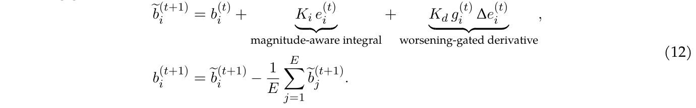
其中 \(\tilde{b}_{i}^{(t+1)}\) 是重新中心化前的偏置，\(K_{d} \ge 0\) 是微分增益。第二行确保 \(\sum _{i}b_{i}^{(t+1)} = 0\)。得到的偏置控制下一步的路由。
第 4.1 节评估标准预训练和持续预训练期间的负载均衡与模型质量，随后进行下游评估。第 4.2 节考察更高学习率和优化动态。之后，我们在第 4.3 节分析逐层负载均衡和推理时专家利用率。最后，第 4.4 节分别考察积分增益和微分增益的作用，并解释默认设置 \(K_{i} = K_{d} = 6 \times 10^{-3}\) 的依据。
小模型验证。我们的主要比较采用 Qwen-3.8-Next（Qiu et al., 2026）架构，具有 20 个 Transformer 层、一个 MTP 模块（Gloeckle et al., 2024），以及每个 MoE 层 768 个（接第 8 页）
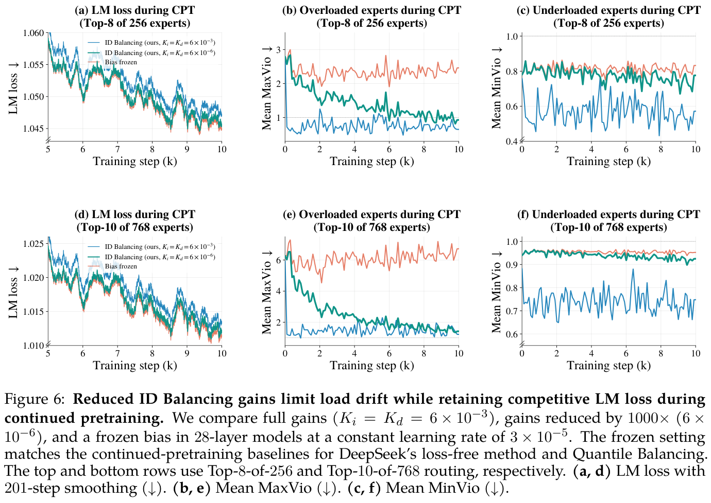
（接第 7 页）
路由专家。根据路由设置，模型约有 18.9B 总参数和 0.87–1.03B 激活参数。我们使用 1024 的全局 batch 大小，在 120B token 上训练 Top-3、Top-5 和 Top-10 变体。学习率峰值为 \(2.54 \times 10^{-3}\)，并通过余弦衰减降至 \(3 \times 10^{-5}\)。所有比较采用相同的 30k 步窗口，分别报告主干和 MTP 负载指标。我们在相同架构、数据和优化器设置下比较 Auxiliary loss、DeepSeek 的无损失方法、Quantile Balancing 和 ID Balancing。遵循 DeepSeek-V3 技术报告（Liu et al., 2024），DeepSeek 的无损失方法使用偏置更新步长 \(\eta = 0.001\)。除图 8 的系数扫描外，Auxiliary loss 基线使用均衡系数 \(\alpha = 0.05\)。除图 5 的诊断实验外，Quantile Balancing 使用不带 EMA 的原始更新。ID Balancing 的主要实验使用 \(K_{i} = K_{d} = 6 \times 10^{-3}\)，增益消融见第 4.4 节。对于持续预训练，我们将两种增益都缩小 1000 倍至 \(6 \times 10^{-6}\)，相关分析见图 6。我们相对于式（3）定义的均匀目标 \(\bar{n}^{(t)}\) 衡量专家过载和负载不足：
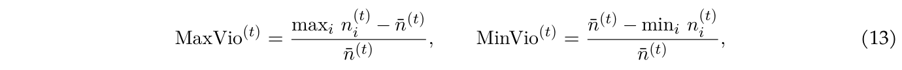
其中，\(n_{i}^{(t)}\) 是步骤 \(t\) 时专家 \(i\) 的 token 计数。这里，\(max_{i}n_{i}^{(t)}\) 和 \(min_{i}n_{i}^{(t)}\) 分别是在步骤 \(t\) 时，该层 \(E\) 个路由专家中任意专家被分配的最大和最小 token 数量。MaxVio 衡量最大的相对过载，上界为 E/K − 1。MinVio 衡量最大的相对负载缺口，取值在 [0, 1] 内；当某个专家没有收到 token 时达到 1。两项指标均越低越好。Last1k 和 Avg. 分别表示最后 1k 步和整个训练窗口的均值。主干指标在 20 层上取平均，但 Worst MaxVio 取所有层和所有步骤中的最大值。MTP 指标单独计算，LM 损失在最后 1k 步上取平均。Act./Total 列出激活参数量和总参数量。更深的绿色表示更低的 LM 损失，更深的红色表示更大的负载违规，粗体标记每个区块各列中的最佳值。表 1 显示，三种基于偏置的方法的 LM 损失相近，最大差距为 0.0023，而 Auxiliary loss 在所有设置下的损失都最高。主干负载均衡的差异更大。在所有三种路由设置下，ID Balancing 都取得最低的 Worst 和 Last1k MaxVio，以及最低的 Last1k 和 Avg. MinVio。在 Top-3 下，它将 Worst MaxVio 从 DeepSeek 方法的 211.19 和 Quantile Balancing 的 31.11 降至 15.33。在 Top-5 和 Top-10 下，Quantile Balancing 仍具有更低的主干 Avg. MaxVio，而在 Top-3 下 ID Balancing 最好。
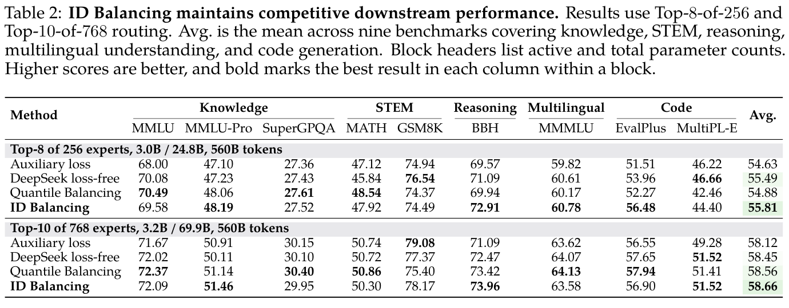
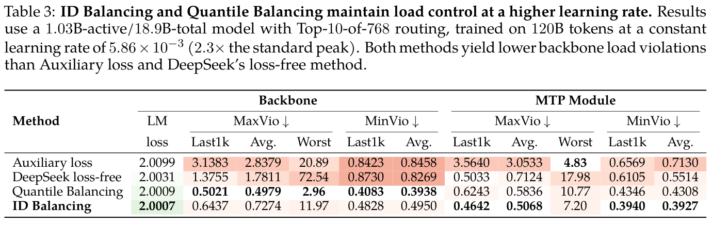
在持续预训练期间保持主动负载控制。DeepSeek 的无损失方法在持续预训练期间冻结专家偏置（Liu et al., 2024）。这避免了偏置更新引起的路由变化，但也移除了主动负载修正（Gupta et al., 2023）。当模型适应新的数据分布时，专家负载可能发生变化，而偏置仍保持固定（Gururangan et al., 2020; Ke et al., 2023）。因此，我们考察较小的 ID Balancing 增益能否在不干扰适应过程的情况下保留主动负载控制。我们在两个采用 Top-8-of-256 和 Top-10-of-768 路由的 28 层模型上，比较完整增益（\(K_{i} = K_{d} = 6 \times 10^{-3}\)）、缩小 1000 倍的增益（\(K_{i} = K_{d} = 6 \times 10^{-6}\)）和冻结偏置。图 6 展示了这一权衡。完整增益产生最高的 LM 损失，而冻结偏置则留下显著的负载不均衡。在 Top-8-of-256 路由下，冻结基线的平均 MaxVio 达到 2.2–2.5，MinVio 约为 0.83。在 Top-10-of-768 路由下，MaxVio 保持在 6 到 7 之间，MinVio 达到约 0.95，表明专家利用严重不足。缩小增益后，在持续预训练的后半段，LM 损失与冻结基线的差距保持在 0.001 以内，同时改善了负载均衡。在 Top-8-of-256 路由下，平均 MaxVio 稳定在 1 附近；在 Top-10-of-768 路由下，它从约 6 降至 1.4。这些结果表明，小幅偏置更新可以修正负载漂移，同时保持接近冻结偏置的 LM 性能。我们将缩小后的增益作为持续预训练的默认设置。在这一阶段，DeepSeek 和 Quantile Balancing 基线保持专家偏置冻结。
下游质量。我们在九个基准上评估在 560B token 上训练的模型。被评估模型采用 Top-8-of-256 和 Top-10-of-768 路由。MMLU（5-shot）（Hendrycks et al., 2021a）、MMLU-Pro（5-shot，CoT）（Wang et al., 2024c）和 SuperGPQA（5-shot，CoT）（Du et al., 2026）评估通用知识。MATH（4-shot，CoT）（Hendrycks et al., 2021b）和 GSM8K（4-shot，CoT）（Cobbe et al., 2021）评估数学问题求解，而 BBH（3-shot，CoT）（Suzgun et al., 2023）评估推理。MMMLU（5-shot）（OpenAI, 2024）评估多语言理解，EvalPlus（0-shot；HumanEval（Chen et al., 2021）、MBPP（Austin et al., 2021）、HumanEval+ 和 MBPP+ 的平均值）与 MultiPL-E（0-shot；Python、C++、Java、PHP、TypeScript、C#、Bash、JavaScript）（Cassano et al., 2023）评估代码生成。表 2 显示，ID Balancing 在 Top-8-of-256 路由下取得 55.81 的平均得分。在 Top-10-of-768 路由下，相比 Auxiliary loss，ID Balancing 将平均得分从 58.12 提升到 58.66，并在九个基准中的五个上高于该基线。这些结果表明，ID Balancing 在改善负载均衡的同时，保持了具有竞争力的下游质量。
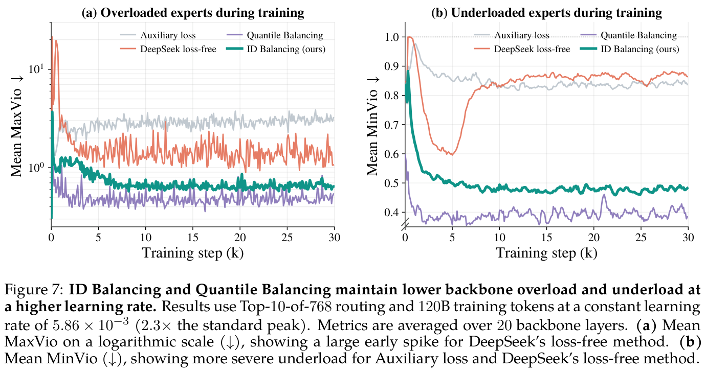
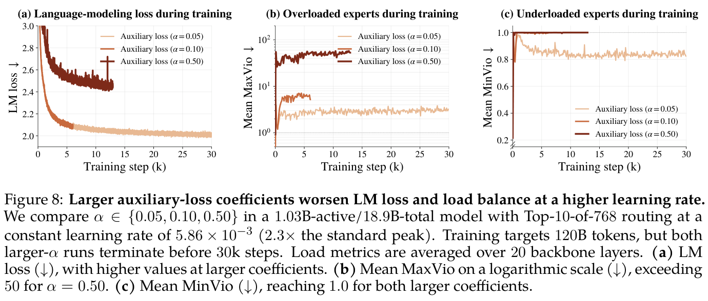
基于第 4.1 节的标准训练结果，我们考察更高学习率下的负载控制。我们还跟踪 gradient 范数和 MoE 输出幅度，以评估负载均衡之外的训练动态。
更高学习率下的负载控制。我们以恒定学习率 \(5.86 \times 10^{-3}\)，即标准峰值的 2.3 倍，在 120B token 上训练 Top-10-of-768 模型。这测试了学习率在整个训练过程中保持较高时的负载控制。表 3 和图 7 显示，ID Balancing 和 Quantile Balancing 的主干负载违规低于 Auxiliary loss 和 DeepSeek 的无损失方法。它们的主干 Last1k MaxVio 分别为 0.6437 和 0.5021，而另外两个基线分别为 3.1383 和 1.3755。Quantile Balancing 提供最强的主干均衡，而 ID Balancing 取得最低的 LM 损失 2.0007，以及最低的 MTP Last1k 和 Avg. MaxVio，分别为 0.4642 和 0.5068。这些结果显示，在所测试的学习率下可实现有效负载控制，但主干和 MTP 均衡之间存在不同的权衡。Auxiliary loss 通过与 LM 目标相同的优化过程更新路由器权重 \(W_{r}\)。在所测试的范围内，增大其系数无法恢复负载均衡。图 8 比较 \(\alpha \in \{0.05, 0.10, 0.50\}\)：较大的系数产生较高的 LM 损失，\(\alpha = 0.50\) 时约为 2.45，而 \(\alpha = 0.05\) 时约为 2.01。\(\alpha = 0.50\) 时，平均 MaxVio 超过 50。两个较大系数的实验都达到平均 MinVio 为 1.0，并在 30k 步之前终止。基于偏置的方法避免了均衡 gradient，但对负载误差的响应不同。DeepSeek 的固定步长更新给予每个非零误差相同的修正，限制了其对严重不均衡的响应。它的主干最坏情况（接第 11 页）
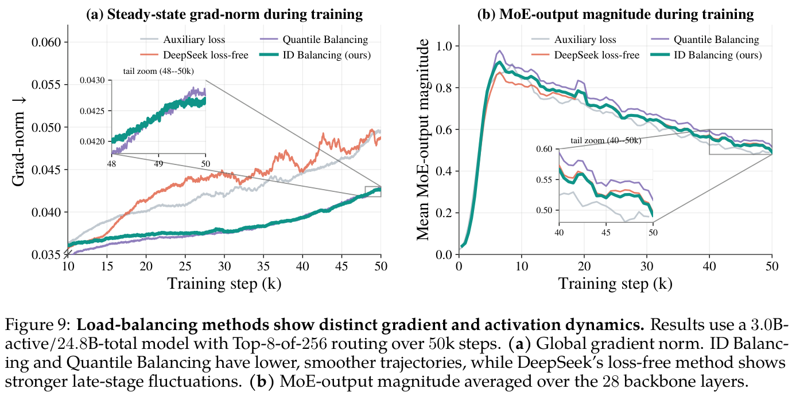
（接第 10 页）
MaxVio 达到 72.54。ID Balancing 根据误差幅度缩放修正，这与图 3 中观察到的较低瞬时过载一致。Quantile Balancing 直接将偏置更新到当前 batch 的目标，在这一压力测试中取得最紧密的主干负载均衡。这一比较凸显了两种有效的响应方式：按误差缩放的累积，以及逐 batch 直接修正到目标。
Gradient 和激活动态。我们在一个采用 Top-8-of-256 路由、具有 3.0B 激活参数和 24.8B 总参数的模型中，考察全局 gradient 范数和平均 MoE 输出幅度。图 9 报告这两个信号，其中输出幅度在 28 个主干层上取平均（Wang et al., 2024a; Xiong et al., 2020）。ID Balancing 和 Quantile Balancing 最终的 gradient 范数接近 0.043，低于 Auxiliary loss 的 0.050 和 DeepSeek 无损失方法的 0.049。DeepSeek 方法在训练后期还表现出更强的波动。MoE 输出幅度在早期上升，然后下降，Quantile Balancing 最终接近 0.54，其他方法接近 0.51–0.52。因此，ID Balancing 在保持与 Auxiliary loss 和 DeepSeek 无损失方法相近的输出尺度时，维持了更低、更平滑的 gradient 范数。
训练时特征。图 10 报告 Top-3-of-768 路由下全部 20 个主干层的 MaxVio 和 MinVio，为表 1 的汇总结果提供补充。上、下两行分别展示训练平均值和最后 1k 步的平均值。Auxiliary loss 的两项指标在各层间差异显著，最后 1k 步只有小幅改善。DeepSeek 的无损失方法在较深层的训练平均过载尤其高：第 19 层的 MaxVio 达到约 6.0，而最后 1k 步约为 0.9。尽管训练后期过载较低，若干层的 MinVio 仍接近 1.0，表明利用不足持续存在。Quantile Balancing 和 ID Balancing 在各层保持更一致的负载控制，训练平均与最终阶段的分布特征差异更小。在全部 20 层中，ID Balancing 的 MaxVio 都低于或接近 Quantile Balancing，MinVio 则更低。因此，其汇总优势反映了整个主干的改善。对于全部四种方法，MinVio 通常在更深层增大。ID Balancing 限制了负载不足，但没有消除这一共同的随深度变化趋势。
推理时的专家利用率。我们通过在九个下游基准的 prefill 模式下记录逐层负载和路由器分数，评估持续预训练后模型的专家利用率。每层的值在各基准上取平均。被评估模型使用 Top-8-of-256 和 Top-10-of-768 路由。同一设置内的模型共享相同架构。ID Balancing 在持续预训练期间使用 \(K_{i} = K_{d} = 6 \times 10^{-6}\)。图 \(11(a, d)\) 报告不活跃专家比例，即没有收到任何评估 token 的专家比例。在 Top-8-of-256 路由下，它的平均比例为 3.1%，而 DeepSeek 的无损失方法为 3.5%、Quantile Balancing 为 4.1%、Auxiliary loss 为 4.7%。在 Top-10-of-768 路由下，相比 Auxiliary loss，它将平均比例从 8.4% 降到 6.4%，将第一层的比例从 9.3% 降到 2.6%。这些结果表明，在评估数据上未被使用的专家更少，这与图 10 中更低的训练时 MinVio 一致。在 Top-8-of-256 路由下，各方法的不活跃比例通常在更深层上升。图 \(11(b, e)\) 报告 Top-K 门控分数熵，（接第 12 页）
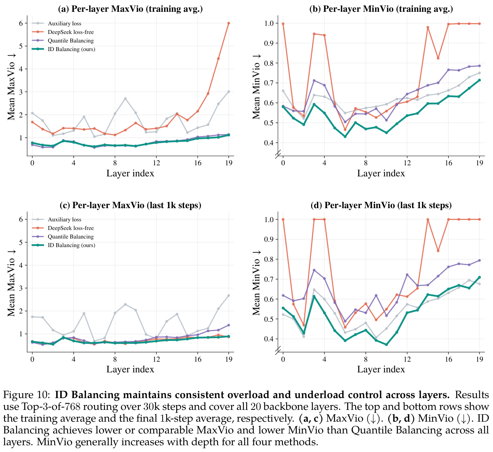
（接第 11 页）
\(H_{top-K} = -\sum _{i=1}^{K}w_{i}\operatorname{log} w_{i}\)，单位为 nat，其中 \(w_{i}\) 是所选专家 \(i\) 的归一化组合权重。更高的熵表示所选专家之间的混合更加均匀。在 Top-8-of-256 路由下，无损失方法在各层上平均的熵略高于 Auxiliary loss，而 DeepSeek 的无损失方法、Quantile Balancing 和 ID Balancing 之间的差异很小。图 \(11(c, f)\) 报告整个专家池的选择分数熵，\(H_{full} = -\sum _{e=1}^{E}p_{e}\operatorname{log} p_{e}\)。对于 Auxiliary loss，\(p_{e}\) 是路由器 logits 上的 softmax 概率。对于无损失方法，它通过将加偏置的 sigmoid 分数 \(\sigma (z_{e}) + b_{e}\) 截断为非负值，然后在专家间归一化而得到。更高的熵表示更平坦的分数分布。对于这些不同的分数类型，其绝对值无法直接比较。在 Top-8-of-256 路由下，无损失方法的分数分布随深度增加而变得更尖锐，Auxiliary loss 则呈相反趋势。
单独考察积分增益 \(K_{i}\)。在 \(K_{d} = 0\) 时，我们改变 \(K_{i} \in \{3, 6, 9\} \times 10^{-3}\)。图 12 表明，最小增益对早期主干不均衡的修正更慢，而各条轨迹在后期变得相似。将 \(K_{i}\) 从 \(3 \times 10^{-3}\) 增至 \(6 \times 10^{-3}\)，会将主干训练平均 MaxVio 从 0.9459 降至 0.8003，将最坏情况 MaxVio 从 23.26 降至 14.96（表 4）。进一步增至 \(9 \times 10^{-3}\)，只将平均值略微降至 0.7872，却将主干最坏情况 MaxVio 提高到 20.13，将 MTP 最坏情况 MaxVio 从 15.18 提高到 35.56。最小增益仍具有最低的 LM 损失，以及若干最低的最终阶段和 MTP 负载指标。因此，我们选择 \(K_{i} = 6 \times 10^{-3}\)，因为它具有更强的早期修正和最低的主干最坏情况 MaxVio，同时避免了 \(9 \times 10^{-3}\) 时更大的 MTP 负载违规。
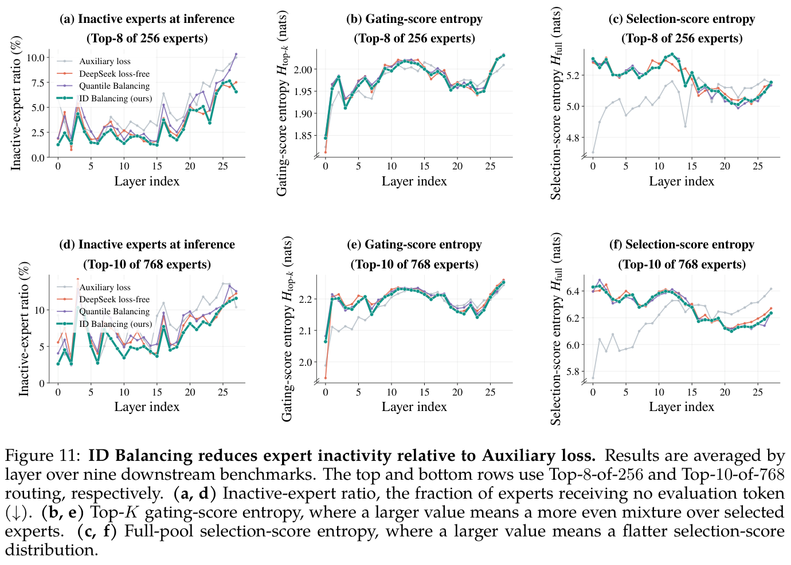
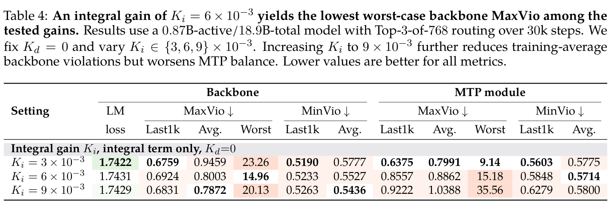
微分增益 \(K_{d}\) 与早期负载控制。在 \(K_{i} = 6 \times 10^{-3}\) 时，我们改变 \(K_{d} \in \{0, 3, 6, 12\} \times 10^{-3}\)，以 \(K_{d} = 0\) 作为仅积分基线。加入微分项改善了早期主干负载控制，而后期轨迹仍然相近（图 13(a)）。默认 \(K_{d} = 6 \times 10^{-3}\) 将 0–1k 步的主干平均 MaxVio 从 2.0020 降至 1.9330，将 1–5k 步的值从 0.9059 降至 0.8612，并使这两个区间的 MinVio 更低（表 5）。使用未经平滑的观测值时，在 1–5k 步内，相比仅积分基线，它还将超过层平均 MaxVio 阈值 \(V_{t} = 1\) 的采样累积超出量降低了 57.9%（图 \(13(b)\)）。这些早期收益伴随着 MTP 均衡上的权衡。更大的微分增益减少了 1–5k 步的主干过载，但增加了 MTP 过载。在默认增益下，MTP 训练平均 MaxVio 从 0.8862 上升到 0.9698，而主干训练平均 MaxVio 只略有改善，从 0.8003 降至 0.7931。我们选择 \(K_{d} = 6 \times 10^{-3}\)，因为它在 1–5k 步内提供了比 \(3 \times 10^{-3}\) 更强的主干控制，而 MTP 过载小于 \(12 \times 10^{-3}\)。在所测试的增益中，它还取得了最低的 LM 损失和主干训练平均 MinVio。
稀疏 MoE。Transformer 架构和大规模预训练推动了语言建模的进展（Vaswani et al., 2017; Radford et al., 2019; Brown et al., 2020），随后是指令（接第 14 页）
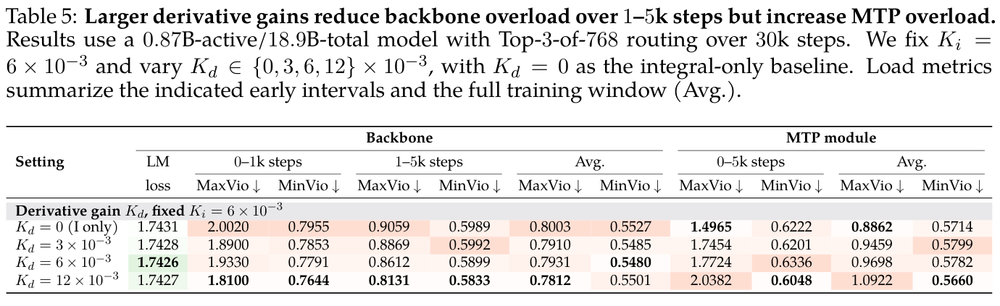
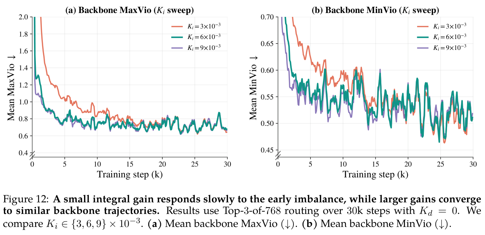
（接第 13 页）
微调和对话模型（Ouyang et al., 2022; OpenAI, 2022; Achiam et al., 2023）。稀疏 MoE 模型通过条件式专家激活来增加总容量，同时让每个 token 的计算量只增加较少，从而延续了这一扩展方向（Du et al., 2022; Rajbhandari et al., 2022; Muennighoff et al., 2025; Puigcerver et al., 2024; He, 2024; Yang et al., 2025a）。Switch Transformer（Fedus et al., 2022）和 GShard（Lepikhin et al., 2021）分别使用 Top-1 和 Top-2 路由，而 BASE Layers（Lewis et al., 2021）、Hash Layers（Roller et al., 2021）和 Expert Choice（Zhou et al., 2022）探索其他 token–专家分配方式。稀疏激活也不限于标准前馈专家：MoH（Jin et al., 2025b）将选择性激活应用于 attention 头，MoE++（Jin et al., 2025a）则结合前馈专家和零计算专家。我们的工作处理了 Top-K MoE 激活比例下降时出现的负载控制挑战。
通过辅助损失实现均衡。辅助损失方法将每个专家的 token 比例与其平均路由器概率结合，以鼓励均衡路由（Fedus et al., 2022）。由此产生的 gradient 更新与语言建模目标相同的路由器权重，从而在两个目标之间引入权衡（Yu et al., 2020; Sener & Koltun, 2018; Liu et al., 2021）。LocMoE（Li et al., 2024）和 MegaBlocks（Gale et al., 2023）等系统层面方法进一步解决了 MoE 高效执行的问题。ID Balancing 通过单独的偏置更新控制专家选择，不向训练目标加入均衡 gradient。
无辅助损失均衡。无辅助损失方法为 Top-K 选择添加各专家特有的偏置，并将其排除在组合权重之外（Wang et al., 2024b; Liu et al., 2024）。DeepSeek 的无损失方法利用负载误差的符号更新这一偏置。它的固定步长舍弃了误差幅度，因此在修正大误差和避免接近均衡时越过目标之间存在权衡。Kimi K3 的 Quantile Balancing（Team et al., 2026）则根据路由器分数裕量的分位数，计算依赖 batch 的目标偏置。在推理时，学到的偏置被冻结，路由使用普通 Top-K 选择。我们提出广义 PID 视角，根据这些更新如何随时间利用反馈来组织它们：DeepSeek 的无损失方法相当于固定步长积分控制，Quantile Balancing 相当于广义比例控制。这一视角启发了 ID Balancing，将感知误差幅度的积分控制与仅在恶化时开启的门控微分修正结合起来。
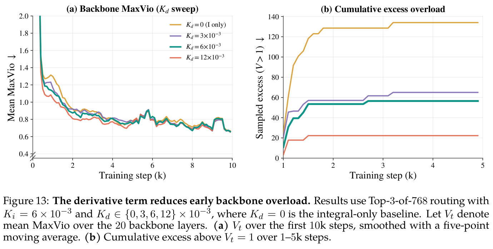
有效的负载控制对于利用更大、更稀疏 MoE 模型的容量至关重要。我们提出无辅助损失均衡的广义 PID 视角，并据此开发 ID Balancing，将感知误差幅度的积分控制、仅在恶化时开启的门控微分修正和偏置零均值中心化结合起来。该方法每层仅需要 O(E) 的 token 计数反馈，不会向语言建模目标加入均衡 gradient。涵盖不同路由稀疏程度、模型规模和学习率设置的实验显示，它能有效控制负载，同时保持具有竞争力的语言建模和下游性能。缩小增益后，持续预训练期间仍可保留主动负载修正；进一步分析表明，各层主干负载控制一致，并且评估数据上的不活跃专家更少。这些结果支持将 ID Balancing 作为更大、更稀疏 MoE 模型负载控制的一种实用方法。
我们的评估在使用固定 Top-K 路由的纯解码器 MoE 模型族内，涵盖了多种路由稀疏程度、模型规模和训练条件。将评估扩展到其他架构和路由方法，是一个自然的下一步。累积式的恶化门控微分更新得到了经验性结果的支持。扩展实验比较的是完整的模型配置，它们在深度、宽度、激活参数量、总参数量和训练时长上有所不同，因此这些实验评估了跨配置的负载控制，而没有单独隔离模型规模本身的影响。
Josh Achiam, Steven Adler, Sandhini Agarwal, Lama Ahmad, Ilge Akkaya, Florencia Leoni Aleman, Diogo Almeida, Janko Altenschmidt, Sam Altman, Shyamal Anadkat, 等。 GPT-4 技术报告。arXiv 预印本 arXiv:2303.08774, 2023.
Kiam Heong Ang, Gregory Chong, and Yun Li. PID 控制系统分析、设计与技术。IEEE transactions on control systems technology, 13(4):559–576, 2005.
Karl J Aström and Tore Hägglund. 高级 PID 控制。John Wiley & Sons, 2005.
Jacob Austin, Augustus Odena, Maxwell Nye, Maarten Bosma, Henryk Michalewski, David Dohan, Ellen Jiang, Carrie Cai, Michael Terry, Quoc Le, 等。 使用 LLM 进行程序合成。arXiv 预印本 arXiv:2108.07732, 2021.
Tom Brown, Benjamin Mann, Nick Ryder, Melanie Subbiah, Jared D Kaplan, Prafulla Dhariwal, Arvind Neelakantan, Pranav Shyam, Girish Sastry, Amanda Askell, 等。 语言模型是少样本学习器。发表于 NeurIPS, 页码 1877–1901, 2020.
Federico Cassano, John Gouwar, Daniel Nguyen, Sydney Nguyen, Luna Phipps-Costin, Donald Pinckney, Ming-Ho Yee, Yangtian Zi, Carolyn Jane Anderson, Molly Q Feldman, 等。 MultiPL-E：一种可扩展且
（接第 15 页最后一条参考文献）
多语言的神经代码生成基准评测方法。IEEE Transactions on Software Engineering, 49(7):3675–3691, 2023.
Mark Chen, Jerry Tworek, Heewoo Jun, Qiming Yuan, Henrique Ponde De Oliveira Pinto, Jared Kaplan, Harri Edwards, Yuri Burda, Nicholas Joseph, Greg Brockman, 等。 评估在代码上训练的 LLM。arXiv 预印本 arXiv:2107.03374, 2021.
Karl Cobbe, Vineet Kosaraju, Mohammad Bavarian, Mark Chen, Heewoo Jun, Lukasz Kaiser, Matthias Plappert, Jerry Tworek, Jacob Hilton, Reiichiro Nakano, 等。 训练验证器以解决数学文字题。arXiv 预印本 arXiv:2110.14168, 2021.
Damai Dai, Chengqi Deng, Chenggang Zhao, RX Xu, Huazuo Gao, Deli Chen, Jiashi Li, Wangding Zeng, Xingkai Yu, Yu Wu, 等。 DeepSeekMoE：迈向 MoE 语言模型的极致专家专门化。发表于 ACL, 页码 1280–1297, 2024.
Tri Dao and Albert Gu. Transformer 是 SSM：通过结构化状态空间对偶性实现广义模型与高效算法。arXiv 预印本 arXiv:2405.21060, 2024.
Nan Du, Yanping Huang, Andrew M Dai, Simon Tong, Dmitry Lepikhin, Yuanzhong Xu, Maxim Krikun, Yanqi Zhou, Adams Wei Yu, Orhan Firat, 等。 GLaM：使用 MoE 高效扩展语言模型。发表于 ICML, 页码 5547–5569, 2022.
Xeron Du, Yifan Yao, Kaijing Ma, Bingli Wang, Tianyu Zheng, Minghao Liu, Yiming Liang, Xiaolong Jin, Zhenlin Wei, Chujie Zheng, 等。 SuperGPQA：将 LLM 评估扩展至 285 个研究生学科。发表于 NeurIPS, 2026.
William Fedus, Barret Zoph, and Noam Shazeer. Switch Transformer：通过简单高效的稀疏性扩展至万亿参数模型。Journal of Machine Learning Research, 23(120):1–39, 2022.
Trevor Gale, Deepak Narayanan, Cliff Young, and Matei Zaharia. MegaBlocks：使用 MoE 进行高效稀疏训练。发表于 MLSys, 页码 288–304, 2023.
Fabian Gloeckle, Badr Youbi Idrissi, Baptiste Rozière, David Lopez-Paz, and Gabriel Synnaeve. 通过 MTP 获得更好、更快的 LLM。arXiv 预印本 arXiv:2404.19737, 2024.
Kshitij Gupta, Benjamin Thérien, Adam Ibrahim, Mats L Richter, Quentin Anthony, Eugene Belilovsky, Irina Rish, and Timothée Lesort. LLM 的持续预训练：如何（重新）warmup 模型？。arXiv 预印本 arXiv:2308.04014, 2023.
Suchin Gururangan, Ana Marasović, Swabha Swayamdipta, Kyle Lo, Iz Beltagy, Doug Downey, and Noah A Smith. 不要停止预训练：使语言模型适应领域与任务。发表于 ACL, 页码 8342–8360, 2020.
Jiaao He, Jiezhong Qiu, Aohan Zeng, Zhilin Yang, Jidong Zhai, and Jie Tang. FastMoE：一种快速的 MoE 训练系统。arXiv 预印本 arXiv:2103.13262, 2021.
Jiaao He, Jidong Zhai, Tiago Antunes, Haojie Wang, Fuwen Luo, Shangfeng Shi, and Qin Li. FasterMoE：大规模动态预训练模型的训练建模与优化。发表于 PPoPP, 页码 120–134, 2022.
Xu Owen He. 百万专家混合模型。arXiv 预印本 arXiv:2407.04153, 2024.
Dan Hendrycks, Collin Burns, Steven Basart, Andy Zou, Mantas Mazeika, Dawn Song, and Jacob Steinhardt. 衡量大规模多任务语言理解。发表于 ICLR, 2021a.
Dan Hendrycks, Collin Burns, Saurav Kadavath, Akul Arora, Steven Basart, Eric Tang, Dawn Song, and Jacob Steinhardt. 使用 MATH 数据集衡量数学问题求解。arXiv 预印本 arXiv:2103.03874, 2021b.
J Stuart Hunter. 指数加权移动平均。Journal of quality technology, 18(4):203–210, 1986.
AJ Isaksson and SF Graebe. 微分滤波器是 PID 设计的组成部分。IEE Proceedings-Control Theory and Applications, 149(1):41–45, 2002.
Robert A Jacobs, Michael I Jordan, Steven J Nowlan, and Geoffrey E Hinton. 局部专家的自适应混合。Neural computation, 3(1):79–87, 1991.
Peng Jin, Bo Zhu, Yuan Li, and Shuicheng Yan. MoE++：使用零计算专家加速 MoE 方法。发表于 ICLR, 页码 50832–50856, 2025a.
Peng Jin, Bo Zhu, Li Yuan, and Shuicheng Yan. MoH：将 MHA 视为混合头 attention。发表于 ICML, 2025b.
Michael A Johnson and Mohammad H Moradi. PID 控制。Springer, 2005.
Zixuan Ke, Yijia Shao, Haowei Lin, Tatsuya Konishi, Gyuhak Kim, and Bing Liu. 语言模型的持续预训练。arXiv 预印本 arXiv:2302.03241, 2023.
Dmitry Lepikhin, HyoukJoong Lee, Yuanzhong Xu, Dehao Chen, Orhan Firat, Yanping Huang, Maxim Krikun, Noam Shazeer, and Zhifeng Chen. GShard：通过条件计算和自动分片扩展巨型模型。发表于 ICLR, 2021.
Mike Lewis, Shruti Bhosale, Tim Dettmers, Naman Goyal, and Luke Zettlemoyer. BASE Layers：简化大型稀疏模型的训练。发表于 ICML, 页码 6265–6274, 2021.
Jing Li, Zhijie Sun, Xuan He, Li Zeng, Yi Lin, Entong Li, Binfan Zheng, Rongqian Zhao, and Xin Chen. LocMoE：用于 LLM 训练的低开销 MoE。arXiv 预印本 arXiv:2401.13920, 2024.
Aixin Liu, Bei Feng, Bing Xue, Bingxuan Wang, Bochao Wu, Chengda Lu, Chenggang Zhao, Chengqi Deng, Chenyu Zhang, Chong Ruan, 等。 DeepSeek-V3 技术报告。arXiv 预印本 arXiv:2412.19437, 2024.
Bo Liu, Xingchao Liu, Xiaojie Jin, Peter Stone, and Qiang Liu. 用于多任务学习的冲突规避 gradient 下降。发表于 NeurIPS, 页码 18878–18890, 2021.
Niklas Muennighoff, Luca Soldaini, Dirk Groeneveld, Kyle Lo, Jacob Morrison, Sewon Min, Weijia Shi, Pete Walsh, Oyvind Tafjord, Nathan Lambert, 等。 OLMoE：开放的 MoE 语言模型。发表于 ICLR, 页码 62061–62121, 2025.
Xiaonan Nie, Pinxue Zhao, Xupeng Miao, Tong Zhao, and Bin Cui. HetuMoE：高效的万亿规模 MoE 分布式训练系统。arXiv 预印本 arXiv:2203.14685, 2022.
OpenAI. 介绍 ChatGPT。CoRR, 2022. 链接 https://openai.com/blog/chatgpt.
OpenAI. 多语言大规模多任务语言理解（MMMLU）。数据集发布于 Hugging Face, 2024.
Long Ouyang, Jeffrey Wu, Xu Jiang, Diogo Almeida, Carroll Wainwright, Pamela Mishkin, Chong Zhang, Sandhini Agarwal, Katarina Slama, Alex Ray, 等。 使用人类反馈训练语言模型遵循指令。发表于 NeurIPS, 页码 27730–27744, 2022.
Igor Podlubny. 分数阶系统与分数阶控制器。Institute of Experimental Physics, Slovak Academy of Sciences, Kosice, 12(3):1–18, 1994.
Joan Puigcerver, Carlos Riquelme Ruiz, Basil Mustafa, and Neil Houlsby. 从稀疏 MoE 到软 MoE。发表于 ICLR, 页码 28435–28445, 2024.
Zihan Qiu, Zekun Wang, Xiao Li, Yanpeng Li, Yang Xu, Yixuan Wang, Huaqing Zhang, Rui Men, Bochao Mao, Chengruidong Zhang, 等。 论 Qwen3.8-Next 架构的设计：评估、效率与训练稳定性。arXiv 预印本 arXiv:2608.30320, 2026.
Alec Radford, Jeffrey Wu, Rewon Child, David Luan, Dario Amodei, Ilya Sutskever, 等。 语言模型是无监督多任务学习器。OpenAI 博客, 1(8):9, 2019.
Samyam Rajbhandari, Conglong Li, Zhewei Yao, Minjia Zhang, Reza Yazdani Aminabadi, Ammar Ahmad Awan, Jeff Rasley, and Yuxiong He. DeepSpeed-MoE：推进 MoE 推理与训练，支撑下一代 AI 规模。发表于 ICML, 页码 18332–18346, 2022.
Stephen Roller, Sainbayar Sukhbaatar, Jason Weston, 等。 用于大型稀疏模型的 Hash Layers。发表于 NeurIPS, 页码 17555–17566, 2021.
Ozan Sener and Vladlen Koltun. 将多任务学习视为多目标优化。发表于 NeurIPS, 2018.
Pritesh Shah and Sudhir Agashe. 分数阶 PID 控制器综述。Mechatronics, 38:29–41, 2016.
Noam Shazeer, Azalia Mirhoseini, Krzysztof Maziarz, Andy Davis, Quoc Le, Geoffrey Hinton, and Jeff Dean. 规模惊人的神经网络：稀疏门控 MoE 层。arXiv 预印本 arXiv:1701.06538, 2017.
Yutao Sun, Li Dong, Shaohan Huang, Shuming Ma, Yuqing Xia, Jilong Xue, Jianyong Wang, and Furu Wei. Retentive Network：面向 LLM 的 Transformer 继任者。arXiv 预印本 arXiv:2307.08621, 2023.
Mirac Suzgun, Nathan Scales, Nathanael Schärli, Sebastian Gehrmann, Yi Tay, Hyung Won Chung, Aakanksha Chowdhery, Quoc Le, Ed H Chi, Denny Zhou, 等。 具有挑战性的 BIG-Bench 任务及 CoT 能否解决它们。发表于 Findings of the ACL, 页码 13003–13051, 2023.
Kimi Team, Tongtong Bai, Yifan Bai, Yiping Bao, Jianfeng Cai, Xinyuan Cai, Peizhou Cao, Yuxuan Cao, Ziwei Chai, Y Charles, 等。 Kimi K3：开放的前沿智能。arXiv 预印本 arXiv:2607.24653, 2026.
Ashish Vaswani, Noam Shazeer, Niki Parmar, Jakob Uszkoreit, Llion Jones, Aidan N Gomez, Łukasz Kaiser, and Illia Polosukhin. Attention 就是你所需要的一切。发表于 NeurIPS, 2017.
Antonio Visioli. 实用 PID 控制。Springer, 2006.
Hongyu Wang, Shuming Ma, Li Dong, Shaohan Huang, Dongdong Zhang, and Furu Wei. DeepNet：将 Transformer 扩展到 1,000 层。IEEE Transactions on Pattern Analysis and Machine Intelligence, 46 (10):6761–6774, 2024a.
Lean Wang, Huazuo Gao, Chenggang Zhao, Xu Sun, and Damai Dai. 用于 MoE 的无辅助损失负载均衡策略。arXiv 预印本 arXiv:2408.15664, 2024b.
Yubo Wang, Xueguang Ma, Ge Zhang, Yuansheng Ni, Abhranil Chandra, Shiguang Guo, Weiming Ren, Aaran Arulraj, Xuan He, Ziyan Jiang, 等。 MMLU-Pro：更稳健、更具挑战性的多任务语言理解基准。发表于 NeurIPS, 页码 95266–95290, 2024c.
Peter R Winters. 通过指数加权移动平均预测销售额。Management science, 6 (3):324–342, 1960.
Ruibin Xiong, Yunchang Yang, Di He, Kai Zheng, Shuxin Zheng, Chen Xing, Huishuai Zhang, Yanyan Lan, Liwei Wang, and Tieyan Liu. 论 Transformer 架构中的层归一化。发表于 ICML, 页码 10524–10533, 2020.
Fuzhao Xue, Zian Zheng, Yao Fu, Jinjie Ni, Zangwei Zheng, Wangchunshu Zhou, and Yang You. OpenMoE：开放 MoE 语言模型的早期探索。arXiv 预印本 arXiv:2402.01739, 2024.
An Yang, Anfeng Li, Baosong Yang, Beichen Zhang, Binyuan Hui, Bo Zheng, Bowen Yu, Chang Gao, Chengen Huang, Chenxu Lv, 等。 Qwen3 技术报告。arXiv 预印本 arXiv:2505.09388, 2025a.
Songlin Yang, Bailin Wang, Yikang Shen, Rameswar Panda, and Yoon Kim. 具有硬件高效训练能力的门控线性 attention Transformer。发表于 ICML, 页码 56501–56523, 2024.
Songlin Yang, Jan Kautz, and Ali Hatamizadeh. Gated Delta Networks：通过 delta 规则改进 Mamba2。发表于 ICLR, 页码 29687–29707, 2025b.
Tianhe Yu, Saurabh Kumar, Abhishek Gupta, Sergey Levine, Karol Hausman, and Chelsea Finn. 用于多任务学习的 gradient 手术。发表于 NeurIPS, 页码 5824–5836, 2020.
Yanqi Zhou, Tao Lei, Hanxiao Liu, Nan Du, Yanping Huang, Vincent Zhao, Andrew M Dai, Quoc V Le, James Laudon, 等。 采用专家选择路由的 MoE。发表于 NeurIPS, 页码 7103–7114, 2022.
模型架构。我们评估三种混合 MoE 配置，覆盖不同的专家池规模和模型规模。它们的规格汇总于表 A。所有三个模型都结合全 attention 和门控线性 attention（Yang et al., 2024; 2025b; Dao & Gu, 2024; Sun et al., 2023），每四个 Transformer 层包含一个全 attention 层。除路由专家外，每个 MoE 层还包含一个共享专家。输入 embedding 与输出头不共享权重。
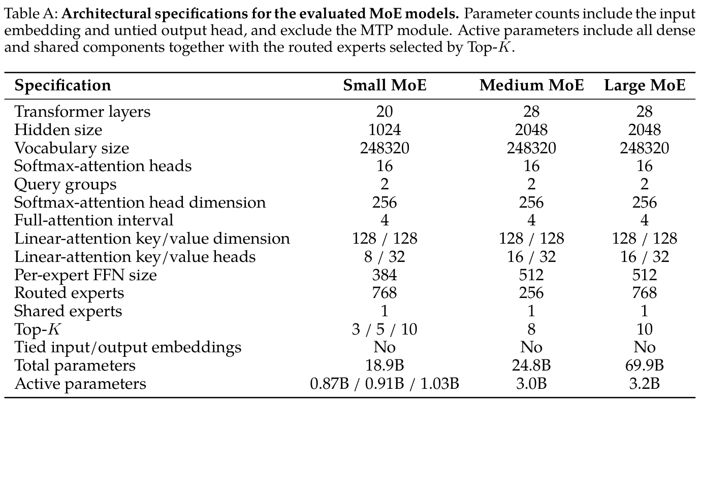